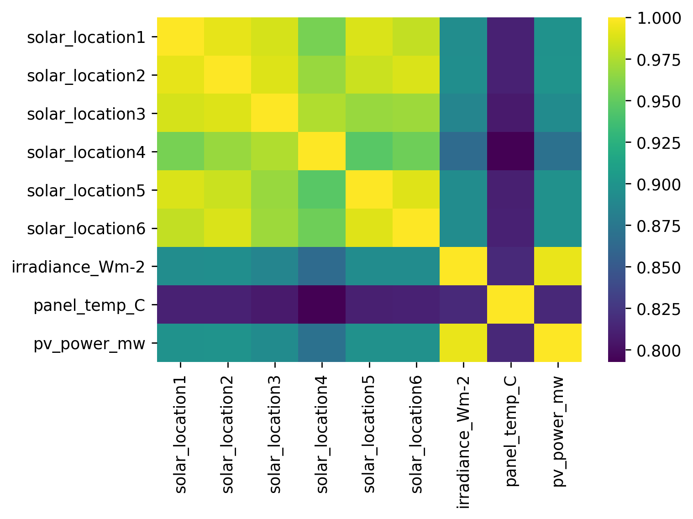
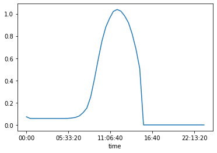

Battery Charging¶
Imports¶
#exports
import numpy as np
import pandas as pd
import os
import matplotlib.pyplot as plt
import seaborn as sns
import joblib
from moepy.lowess import quantile_model
from sklearn.pipeline import Pipeline
from sklearn.linear_model import LinearRegression
from sklearn.metrics import make_scorer, r2_score, mean_absolute_error, mean_squared_error
from sklearn.ensemble import RandomForestRegressor, GradientBoostingRegressor
from skopt.plots import plot_objective
from skopt.space import Real, Categorical, Integer
from batopt import clean, discharge, utils
import FEAutils as hlp
# Should do some investigation of how the panel temp influences performance
User Stories¶
raw_data_dir = '../data/raw'
intermediate_data_dir = '../data/intermediate'
cache_data_dir = '../data/nb-cache'
charge_opt_model_fp = '../models/charge_opt.sav'
Loading Data¶
df = clean.combine_training_datasets(intermediate_data_dir).interpolate(limit=1)
df.head()
| demand | pv | weather | demand_MW | irradiance_Wm-2 | panel_temp_C | pv_power_mw | solar_location1 | solar_location2 | solar_location3 | solar_location4 | solar_location5 | solar_location6 | temp_location1 | temp_location2 | temp_location3 | temp_location4 | temp_location5 | temp_location6 | holidays | |
|---|---|---|---|---|---|---|---|---|---|---|---|---|---|---|---|---|---|---|---|---|
| 2015-01-01 00:00:00+00:00 | nan | nan | nan | nan | nan | nan | nan | 0 | 0 | 0 | 0 | 0 | 0 | 9.75 | 9.65 | 8.83 | 7.58 | 11.62 | 11.22 | nan |
| 2015-01-01 00:30:00+00:00 | nan | nan | nan | nan | nan | nan | nan | 0 | 0 | 0 | 0 | 0 | 0 | 9.83 | 9.705 | 8.865 | 7.6 | 11.635 | 11.27 | nan |
| 2015-01-01 01:00:00+00:00 | nan | nan | nan | nan | nan | nan | nan | 0 | 0 | 0 | 0 | 0 | 0 | 9.91 | 9.76 | 8.9 | 7.62 | 11.65 | 11.32 | nan |
| 2015-01-01 01:30:00+00:00 | nan | nan | nan | nan | nan | nan | nan | 0 | 0 | 0 | 0 | 0 | 0 | 9.95 | 9.78 | 9 | 7.615 | 11.65 | 11.31 | nan |
| 2015-01-01 02:00:00+00:00 | nan | nan | nan | nan | nan | nan | nan | 0 | 0 | 0 | 0 | 0 | 0 | 9.99 | 9.8 | 9.1 | 7.61 | 11.65 | 11.3 | nan |
df.pv_power_mw.plot()
<AxesSubplot:>

Correlations between the solar variables:
solar_cols = [c for c in df.columns if 'solar_location' in c]
solar_cols.append('irradiance_Wm-2')
solar_cols.append('panel_temp_C')
solar_cols.append('pv_power_mw')
fig, ax = plt.subplots(dpi=250)
df_solar = df.filter(solar_cols).copy()
ax = sns.heatmap(df_solar.corr(), cmap='viridis')
fig.savefig('../img/solar_corrplot.png')

As in the demand data, estimating the quantiles for the solar PV output:
#exports
def estimate_daily_solar_quantiles(x, y, x_pred = np.linspace(0, 23.5, 100), **model_kwargs):
# Fitting the model
df_quantiles = quantile_model(x, y, x_pred=x_pred, **model_kwargs)
# Cleaning names and sorting for plotting
df_quantiles.columns = [f'p{int(col*100)}' for col in df_quantiles.columns]
df_quantiles = df_quantiles[df_quantiles.columns[::-1]]
return df_quantiles
dts = df.index.tz_convert('Europe/London')
x = np.array(dts.hour + dts.minute/60)
y = df['pv_power_mw'].values
rerun_daily_solar_model = False
daily_solar_filename = 'daily_solar_quantile_model_results.csv'
if (rerun_daily_solar_model == True) or (daily_solar_filename not in os.listdir(cache_data_dir)):
df_quantiles = estimate_daily_solar_quantiles(x, y, frac=0.2, num_fits=48, robust_iters=3)
df_quantiles.to_csv(f'{cache_data_dir}/{daily_solar_filename}')
else:
df_quantiles = pd.read_csv(f'{cache_data_dir}/{daily_solar_filename}', index_col='x')
And plotting
x_jittered = x + (np.random.uniform(size=len(x)) - 0.5)/2.5
# Plotting
fig, ax = plt.subplots(dpi=250)
ax.scatter(x_jittered, y, s=0.2, color='k', alpha=0.5)
df_quantiles.plot(cmap='viridis', legend=False, ax=ax)
hlp.hide_spines(ax)
ax.legend(frameon=False, bbox_to_anchor=(1, 0.9), title='Percentiles')
ax.set_xlabel('Time of Day')
ax.set_ylabel('Demand (MW)')
ax.set_xlim(0, 24)
ax.set_ylim(0, 4)
fig.savefig('../img/daily_solar_profile.png')

Proportion of days during which we can fully charge the battery¶
It may be useful to know the proportion of days during which the battery can be fully charged.
df_solar_hrs = df.between_time('00:00:00', '15:00:00')
pv_generation = df_solar_hrs.groupby(df_solar_hrs.index.date).sum()['pv_power_mw']*0.5 # available daily energy from PV
fig, ax = plt.subplots()
ax.hist(pv_generation, bins=20)
plt.show()
prop = np.sum(pv_generation >= 6)/pv_generation.size
print("Proportion of days where solar generation exceeds 6 MWh: {:.2f}%".format(prop*100))

Proportion of days where solar generation exceeds 6 MWh: 29.85%
Optimal charging with perfect foresight¶
We will now develop an algorithm to determine the optimal charging schedule given a perfect solar forecast.
The scoring function for the generation component rewards us taking as much energy as possible from solar PV. The proportion of energy from PV for a day \(d\) is given by \(\(p_{d,1} = \frac{\sum{P_{d,k}}}{\sum{B_{d,k}}}\)\) where we are summing over all periods \(k\). An equivalent equation is applies for \(p_{d,2}\) which is the energy that is drawn from the grid. The scoring function rewards \(p_{d,1}\) over \(p_{d,2}\) in a ratio of 3 to 1.
Any schedule which fully exploits the solar PV potential until the battery is charged is equally good in terms of the scoring function. However, it may be worth considering methods which give a smoother charge profile for the purposes of producing a robust model for unseen days.
In addition, we need to have a method of intelligently allocating charge when the solar PV potential is less than the capacity of the battery.
Some possible methods for this:
- Naively reallocate over the middle of they day (say 09:00--15:00)
- Add charge to periods where charge has already been committed.
- Use a forecast for PV output and allocate charge proportionally to the forecast.
s_pv = df['pv_power_mw'].dropna()
solar_profile = discharge.sample_random_days(s_pv)
solar_profile.plot()
<AxesSubplot:>
For perfect foresight, any schedule that draws all of the available solar power or 6 MWh (if the total solar production exceeds 6 MWh) is equally good.
This first approach will aim to draw greedily from until 6 MWh is satisfied, or all of the solar production has been expended.
In cases where there is not enough solar PV to fill the battery, we will then uniformly add the remaining capacity across all periods.
Note: this seems to work on this dataset but won't if there is a very large spike in solar PV, such topping up uniformly causes a constraint to be violated. It also may not work if the number of periods over which we top up is decreased.
#exports
def extract_solar_profile(s_solar_sample_dt, start_time='00:00', end_time='15:00'):
dt = str(s_solar_sample_dt.index[0].date())
solar_profile = s_solar_sample_dt[f'{dt} {start_time}':f'{dt} {end_time}'].values
return solar_profile
def charge_profile_greedy(solar_profile, capacity=6, initial_charge=0, max_charge_rate=2.5, time_unit=0.5):
order = np.flip(np.argsort(solar_profile))
charge = initial_charge
solution = np.zeros(len(solar_profile))
for i in order:
solar_available = np.minimum(solar_profile[i], max_charge_rate)
solar_available = min(solar_available, (capacity - charge)/time_unit)
solution[i] = solar_available
charge = np.sum(solution)*time_unit
if charge > capacity:
break
return solution
def topup_charge_naive(charge_profile, capacity=6, time_unit=0.5, period_start=16, period_end=30):
charge = np.sum(charge_profile)*time_unit
spare_cap = capacity - charge
topup_value = spare_cap/((period_end-period_start)*time_unit)
new_profile = np.copy(charge_profile)
new_profile[period_start:period_end] += topup_value # Add topup_value uniformly between start and end periods
return new_profile
def optimal_charge_profile(solar_profile, capacity=6, time_unit=0.5, max_charge_rate=2.5):
solution = charge_profile_greedy(solar_profile)
solution = topup_charge_naive(solution)
assert np.isclose(np.sum(solution), capacity/time_unit), "Does not meet capacity constraint".format(np.sum(solution))
assert np.all(solution <= max_charge_rate), "Does not meet max charge rate constraint. Max is {}".format(np.max(solution))
return solution
random_solar_profile = discharge.sample_random_day(s_pv).pipe(extract_solar_profile)
x = optimal_charge_profile(random_solar_profile) # Note there is sometimes a rounding error here
plt.plot(x)
[<matplotlib.lines.Line2D at 0x25382e34520>]

The danger with this method is that it can be quite spiky. I wonder if this (a) makes the function difficult to learn (b) is too risky as compared with hedging bets with a more smoother approach.
Smooth Approach¶
We can use the same peak flattening algorithm developed for the dischrge optimisation
adj_random_solar_profile = discharge.flatten_peak(random_solar_profile)
plt.plot(random_solar_profile)
plt.plot(adj_random_solar_profile)
[<matplotlib.lines.Line2D at 0x25382e8f160>]
Which we can deduct from the original evening profile to construct the charge profile
#exports
construct_charge_profile = lambda solar_profile, adj_solar_profile: solar_profile - adj_solar_profile
charge_profile = construct_charge_profile(random_solar_profile, adj_random_solar_profile)
plt.plot(charge_profile)
[<matplotlib.lines.Line2D at 0x25382ed7e80>]
Rather than the sample day we've just used we'll now repeat this step for all days we have pv data on, returning a series of the new charge values that can be easily added to the discharge values
#exports
def construct_charge_s(s_pv, start_time='00:00', end_time='15:00'):
s_charge = pd.Series(index=s_pv.index, dtype=float).fillna(0)
for dt in s_pv.index.strftime('%Y-%m-%d').unique():
solar_profile = s_pv[dt].pipe(extract_solar_profile, start_time=start_time, end_time=end_time)
adj_solar_profile = discharge.flatten_peak(solar_profile)
charge_profile = construct_charge_profile(solar_profile, adj_solar_profile)
s_charge[f'{dt} {start_time}':f'{dt} {end_time}'] = charge_profile
return s_charge
def charge_is_valid(charge_profile, capacity=6, max_charge_rate=2.5, time_unit=0.5):
"""
Function determining if a charge profile is valid (and fully charges the battery)
"""
if np.all(np.isclose(capacity/time_unit, charge_profile.groupby(charge_profile.index.date).sum())) is False:
return False
elif np.all(charge_profile.groupby(charge_profile.index.date).max() <= max_charge_rate) is False:
return False
else:
return True
s_charge = construct_charge_s(s_pv, start_time='00:00', end_time='15:00')
s_charge.iloc[:48*7].plot()
charge_is_valid(s_charge)
True
With the greedy algorithm we can analyse the periods during which charging occurs:
s_charge.groupby(s_charge.index.time).mean().plot()
<AxesSubplot:xlabel='time'>

Unsurprisingly we never charge before 5am. We can therefore truncate our training to just look at 05:00--15:30.
Confirm that the optimal charge adds up to 6 MWh each day:
s_charge.groupby(s_charge.index.date).sum().round(10).value_counts()
12.000000 763
12.130526 1
12.160000 1
12.118333 1
12.211000 1
12.240000 1
12.095714 1
12.469091 1
12.081538 1
12.555455 1
12.132308 1
12.235714 1
12.003333 1
12.007100 1
dtype: int64
Model development: charging¶
Following the same structure as battery discharge, we will aim to predict the optimal charge schedule.
#exports
def construct_df_charge_features(df, dt_rng=None):
if dt_rng is None:
dt_rng = pd.date_range(df.index.min(), df.index.max(), freq='30T')
df_features = pd.DataFrame(index=dt_rng)
# Filtering for the temperature weather data
temp_loc_cols = df.columns[df.columns.str.contains('temp_location')]
df_features.loc[df.index, temp_loc_cols] = df[temp_loc_cols].copy()
df_features = df_features.ffill(limit=1)
# Adding lagged solar
df_features['pv_7d_lag'] = df['pv_power_mw'].shift(48*7)
# Adding solar irradiance data
solar_loc_cols = df.columns[df.columns.str.contains('solar_location')]
df_features.loc[df.index, solar_loc_cols] = df[solar_loc_cols].copy()
df_features = df_features.ffill(limit=1)
# Adding datetime features
dts = df_features.index.tz_convert('Europe/London') # We want to use the 'behavioural' timezone
df_features['weekend'] = dts.dayofweek.isin([5, 6]).astype(int)
df_features['dow'] = dts.dayofweek
hour = dts.hour + dts.minute/60
df_features['sin_hour'] = np.sin(2*np.pi*hour/24)
df_features['cos_hour'] = np.cos(2*np.pi*hour/24)
df_features['sin_doy'] = np.sin(2*np.pi*dts.dayofyear/365)
df_features['cos_doy'] = np.cos(2*np.pi*dts.dayofyear/365)
# Removing some extraneous features
cols = [c for c in df_features.columns if 'solar_location4' not in c and 'solar_location1' not in c]
df_features = df_features.filter(cols)
#Add rolling solar
solar_cols = [c for c in df_features.columns if 'solar_location' in c]
df_features[[col+'_rolling' for col in solar_cols]] = df_features.rolling(3).mean()[solar_cols]
# Add rolling temp
temp_cols = [c for c in df_features.columns if 'temp_location' in c]
df_features[[col+'_rolling' for col in temp_cols]] = df_features.rolling(3).mean()[temp_cols]
# Removing NaN values
df_features = df_features.dropna()
return df_features
#exports
def extract_charging_datetimes(df, start_hour=4, end_hour=15):
hour = df.index.hour + df.index.minute/60
charging_datetimes = df.index[(hour>=start_hour) & (hour<=end_hour)]
return charging_datetimes
#exports
def prepare_training_input_data(intermediate_data_dir, start_hour=4):
# Loading input data
df = clean.combine_training_datasets(intermediate_data_dir).interpolate(limit=1)
df_features = construct_df_charge_features(df)
# Filtering for overlapping feature and target data
dt_idx = pd.date_range(df_features.index.min(), df['pv_power_mw'].dropna().index.max()-pd.Timedelta(minutes=30), freq='30T')
s_pv = df.loc[dt_idx, 'pv_power_mw']
print(s_pv)
df_features = df_features.loc[dt_idx]
# Constructing the charge series
s_charge = construct_charge_s(s_pv, start_time=f'0{start_hour}:00', end_time='15:00')
# Filtering for evening datetimes
charging_datetimes = extract_charging_datetimes(df_features, start_hour=start_hour)
X = df_features.loc[charging_datetimes]
y = s_charge.loc[charging_datetimes]
return X, y
X, y = prepare_training_input_data(intermediate_data_dir)
X.shape, y.shape
2017-11-10 00:00:00+00:00 0.0
2017-11-10 00:30:00+00:00 0.0
2017-11-10 01:00:00+00:00 0.0
2017-11-10 01:30:00+00:00 0.0
2017-11-10 02:00:00+00:00 0.0
...
2019-12-17 21:30:00+00:00 0.0
2019-12-17 22:00:00+00:00 0.0
2019-12-17 22:30:00+00:00 0.0
2019-12-17 23:00:00+00:00 0.0
2019-12-17 23:30:00+00:00 0.0
Freq: 30T, Name: pv_power_mw, Length: 36864, dtype: float64
((17664, 27), (17664,))
random_day = pd.to_datetime(np.random.choice(y.index.date))
plt.plot(y[y.index.date == random_day])
[<matplotlib.lines.Line2D at 0x25382f4b220>]

df_pred = clean.generate_kfold_preds(X.values, y.values, RandomForestRegressor(), index=X.index)
df_pred.head()
| pred | true | |
|---|---|---|
| 2017-11-10 04:00:00+00:00 | 0.066136 | 0 |
| 2017-11-10 04:30:00+00:00 | 0.064022 | 0 |
| 2017-11-10 05:00:00+00:00 | 0.099278 | 0 |
| 2017-11-10 05:30:00+00:00 | 0.031904 | 0 |
| 2017-11-10 06:00:00+00:00 | 0.133574 | 0 |
plt.scatter(df_pred.true, df_pred.pred, s=0.1)
plt.ylabel("Predicted")
plt.xlabel("Actual")
Text(0.5, 0, 'Actual')
We need to fix the predictions such that they satisfy the battery constraints. We will do this in the same way as applied in the battery discharge component, first clipping the charge rate to be between 0--2.5MW, then normalising such that the total charge sums to 6 MWh.
#exports
def normalise_total_charge(s_pred, charge=6., time_unit=0.5):
s_daily_charge = s_pred.groupby(s_pred.index.date).sum()
for date, total_charge in s_daily_charge.items():
with np.errstate(divide='ignore', invalid='ignore'):
s_pred.loc[str(date)] *= charge/(time_unit*total_charge)
return s_pred
clip_charge_rate = lambda s_pred, max_rate=2.5, min_rate=0: s_pred.clip(lower=min_rate, upper=max_rate)
post_pred_charge_proc_func = lambda s_pred: (s_pred
.pipe(clip_charge_rate)
.pipe(normalise_total_charge)
)
post_pred_charge_proc_func(df_pred['true']).groupby(df_pred.index.date).sum().value_counts()
12.0 393
12.0 157
12.0 138
12.0 40
12.0 31
12.0 4
12.0 4
12.0 1
Name: true, dtype: int64
Model Comparison Metrics¶
Schedules are scored according to the proportion of the total battery charge that comes from solar: \(p_{d,1} = \frac{\sum{P_{d,k}}}{\sum{B_{d,k}}}\).
We will first write a function which evaluates this scoring function for a charging schedule and solar profile.
#exports
def score_charging(schedule, solar_profile):
# The actual pv charge is the minimum of the scheduled charge and the actual solar availability
actual_pv_charge = np.minimum(schedule, solar_profile)
score = np.sum(actual_pv_charge)/np.sum(schedule)
return score
# example:
df_pred['pred'] = post_pred_charge_proc_func(df_pred['pred'])
schedule = discharge.sample_random_day(df_pred['pred'])
solar_profile = df.loc[schedule.index]['pv_power_mw']
print("Score for random day: {}".format(score_charging(schedule, solar_profile)))
# example:
schedule = df_pred['pred']
solar_profile = df.loc[schedule.index]['pv_power_mw']
print("Score for entire dataset: {}".format(score_charging(schedule, solar_profile)))
Score for random day: 0.6541809834766956
Score for entire dataset: 0.8135381339249057
However remember that some days there is not enough solar PV to fill the battery. It would be good to know what % of the max score we achieved. That is, the sum of our PV charge over the total available PV capacity (capped at 6 MWh per day).
#exports
def max_available_solar(solar_profile, max_charge_rate=2.5, capacity_mwh=6, time_unit=0.5):
"""
Return the solar PV potential available to the battery.
That is, the total PV potential with a daily cap of 6 MWh.
"""
available = solar_profile.clip(0,2.5).groupby(solar_profile.index.date).sum() * time_unit
clipped = np.clip(available.values, 0, capacity_mwh)
total = np.sum(clipped)
return total
Now we need a function to evaluate a schedule as a proportion of the max available score. That is, the total PV charge used by the battery divided by the total available solar PV.
#exports
def prop_max_solar(schedule, solar_profile, time_unit=0.5):
"""
Get the proportion of maximum solar exploitation for charging schedule, given a solar PV profile
"""
actual_pv_charge = np.sum(np.minimum(schedule, solar_profile)*time_unit)
max_pv_charge = max_available_solar(solar_profile)
return actual_pv_charge/max_pv_charge
def construct_solar_exploit_calculator(solar_profile, charging_datetimes=None, scorer=False):
if charging_datetimes is None:
charging_datetimes = extract_charging_datetimes(solar_profile)
def calc_solar_exploitation(y, y_pred):
# Checking evening datetimes
if hasattr(y_pred, 'index') == True:
charging_datetimes = extract_charging_datetimes(y_pred)
assert y_pred.shape[0] == solar_profile.loc[charging_datetimes].shape[0], f'The prediction series must be the same length as the number of evening datetimes in the main dataframe, {y_pred.shape[0]} {s_demand.loc[evening_datetimes].shape[0]}'
exploitation_pct = 100 * prop_max_solar(y_pred, solar_profile.loc[charging_datetimes])
return exploitation_pct
if scorer == True:
return make_scorer(calc_solar_exploitation)
else:
return calc_solar_exploitation
# example:
df_pred['pred'] = post_pred_charge_proc_func(df_pred['pred'])
schedule = discharge.sample_random_day(df_pred['pred'])
solar_profile = df.loc[schedule.index]['pv_power_mw']
print("Solar exploitation for random day: {}".format(prop_max_solar(schedule, solar_profile)))
# example:
schedule = df_pred['pred']
solar_profile = df.loc[schedule.index]['pv_power_mw']
print("Solar exploitation for entire dataset: {}".format(prop_max_solar(schedule, solar_profile)))
Solar exploitation for random day: 0.9995421307529543
Solar exploitation for entire dataset: 0.9570752322597926
Model comparison¶
Now let's try some different models and view their scores and the proportion of maximum PV potential:
models = {
'std_linear': LinearRegression(),
'boosted': GradientBoostingRegressor(),
'random_forest': RandomForestRegressor(),
}
charging_datetimes = extract_charging_datetimes(X)
solar_exploit_calc = construct_solar_exploit_calculator(df['pv_power_mw'], charging_datetimes)
for key in models:
df_pred = clean.generate_kfold_preds(X.values, y.values, models[key], index=X.index)
df_pred['pred'] = post_pred_charge_proc_func(df_pred['pred'])
schedule = df_pred['pred']
solar_profile = df.loc[schedule.index]['pv_power_mw']
score = score_charging(schedule, solar_profile)
exploitation_pct = solar_exploit_calc(df_pred['true'], df_pred['pred'])
print(f"Model: `{key}` Score: {score:.3f} Proportion of max: {exploitation_pct:.3f}%")
Model: `std_linear` Score: 0.788 Proportion of max: 92.685%
Model: `boosted` Score: 0.797 Proportion of max: 93.818%
Model: `random_forest` Score: 0.814 Proportion of max: 95.769%
Final check that the predictions meet the constraints:
print(df_pred['pred'].groupby(df_pred.index.date).sum().value_counts()) #Should sum to 12 MWh for all days
print(np.max(df_pred['pred'])) #Max should not exceed 2.5 MW
12.0 282
12.0 179
12.0 171
12.0 74
12.0 43
12.0 12
12.0 7
Name: pred, dtype: int64
1.8012238069778999
Checking out the average day:
average_day = df_pred.pred.astype('float').groupby(df_pred.index.time).mean().values
plt.plot(average_day)
[<matplotlib.lines.Line2D at 0x25383639640>]

We'll also create a wrapper for fitting and saving the model
#exports
def fit_and_save_charging_model(X, y, charge_opt_model_fp, model_class=RandomForestRegressor, **model_params):
model = model_class(**model_params)
model.fit(X, y)
with open(charge_opt_model_fp, 'wb') as fp:
joblib.dump(model, fp)
return
Held out set¶
We'll test this on a hold-out set
def get_train_test(arr, start_of_test_period):
train_arr = arr[:pd.to_datetime(start_of_test_period, utc=True)]
test_arr = arr[pd.to_datetime(start_of_test_period, utc=True):]
return train_arr, test_arr
start_of_test_period = '2019-02-04'
X_train, X_test = get_train_test(X, start_of_test_period)
y_train, y_test = get_train_test(y, start_of_test_period)
best_model = LinearRegression()
best_model.fit(X_train, y_train)
preds = pd.Series(best_model.predict(X_test), index=X_test.index)
print(prop_max_solar(preds, y_test))
0.7155203185335218
Hyperparameter Tuning¶
We're now ready to tune the hyper-parameters
X, y = prepare_training_input_data(intermediate_data_dir)
charging_datetimes = extract_charging_datetimes(X)
solar_exploit_scorer = construct_solar_exploit_calculator(solar_profile=df['pv_power_mw'],
charging_datetimes=charging_datetimes,
scorer=True)
groups = charging_datetimes.date
pipeline = Pipeline([
('pandas_RF', utils.PandasRandomForestRegressor())
])
search_spaces = {
'pandas_RF__min_samples_leaf': Integer(1, 20, 'uniform'),
'pandas_RF__criterion': Categorical(['mse', 'mae']),
'pandas_RF__n_estimators': Integer(10, 150, 'uniform'),
'pandas_RF__max_features': Categorical(['auto', 'sqrt']),
'pandas_RF__max_depth': Integer(5, 200, 'uniform'),
'pandas_RF__min_samples_split': Integer(2, 10, 'uniform'),
'pandas_RF__min_samples_leaf': Integer(1, 4, 'uniform'),
'pandas_RF__bootstrap': Categorical([True, False])
}
opt = utils.BayesSearchCV(
pipeline,
search_spaces,
n_iter=20,
verbose=1,
cv=4, # 8 works well for me as that's how many concurrent workers I can use
scoring=solar_exploit_scorer,
n_jobs=-1
)
fit_BayesSearchCV = False
if fit_BayesSearchCV == True:
opt.fit(X, y, groups=groups)
print(f'validation score: {opt.best_score_}')
print(f'test score: {opt.score(X, y)}')
print(f'best params: {opt.best_params_}')
_ = plot_objective(opt.optimizer_results_[0])
plt.show()
2017-11-10 00:00:00+00:00 0.0
2017-11-10 00:30:00+00:00 0.0
2017-11-10 01:00:00+00:00 0.0
2017-11-10 01:30:00+00:00 0.0
2017-11-10 02:00:00+00:00 0.0
...
2019-12-17 21:30:00+00:00 0.0
2019-12-17 22:00:00+00:00 0.0
2019-12-17 22:30:00+00:00 0.0
2019-12-17 23:00:00+00:00 0.0
2019-12-17 23:30:00+00:00 0.0
Freq: 30T, Name: pv_power_mw, Length: 36864, dtype: float64
We'll now use the tuned values to fit our model
model_params = {
'criterion': 'mse',
'min_samples_leaf': 4,
'min_samples_split': 2,
'n_estimators': 100,
}
model = RandomForestRegressor(**model_params)
df_pred = clean.generate_kfold_preds(X.values, y.values, model, index=X.index)
df_pred['pred'] = post_pred_charge_proc_func(df_pred['pred'])
schedule = df_pred['pred']
solar_profile = df.loc[schedule.index]['pv_power_mw']
exploitation_pct = solar_exploit_calc(df_pred['true'], df_pred['pred'])
print(exploitation_pct)
95.50297361291675
We'll quickly check the residuals
fig, ax = plt.subplots()
ax.scatter(df_pred.true, df_pred.pred, s=0.1)
plt.show()

Test evaluation¶
#exports
def prepare_test_feature_data(raw_data_dir, intermediate_data_dir, test_start_date=None, test_end_date=None, start_time='08:00', end_time='23:59'):
# Loading input data
df_features = (clean
.combine_training_datasets(intermediate_data_dir)
.interpolate(limit=1)
.pipe(construct_df_charge_features)
)
# Loading default index (latest submission)
if test_end_date is None or test_start_date is None:
index = discharge.load_latest_submission_template(raw_data_dir).index
else:
index = df_features[test_start_date:test_end_date].index
# Filtering feature data on submission datetimes
df_features = df_features.loc[index].between_time(start_time, end_time)
return df_features
df_submission_template = discharge.load_latest_submission_template(raw_data_dir)
df_features = prepare_test_feature_data(raw_data_dir, intermediate_data_dir)
df_features.head()
---------------------------------------------------------------------------
KeyError Traceback (most recent call last)
<ipython-input-45-d1a30d3ccf60> in <module>
1 df_submission_template = discharge.load_latest_submission_template(raw_data_dir)
----> 2 df_features = prepare_test_feature_data(raw_data_dir, intermediate_data_dir)
3
4 df_features.head()
<ipython-input-44-e0ab5bc5a9db> in prepare_test_feature_data(raw_data_dir, intermediate_data_dir, test_start_date, test_end_date, start_time, end_time)
15
16 # Filtering feature data on submission datetimes
---> 17 df_features = df_features.loc[index].between_time(start_time, end_time)
18
19 return df_features
~\anaconda3\envs\batopt\lib\site-packages\pandas\core\indexing.py in __getitem__(self, key)
892
893 maybe_callable = com.apply_if_callable(key, self.obj)
--> 894 return self._getitem_axis(maybe_callable, axis=axis)
895
896 def _is_scalar_access(self, key: Tuple):
~\anaconda3\envs\batopt\lib\site-packages\pandas\core\indexing.py in _getitem_axis(self, key, axis)
1110 raise ValueError("Cannot index with multidimensional key")
1111
-> 1112 return self._getitem_iterable(key, axis=axis)
1113
1114 # nested tuple slicing
~\anaconda3\envs\batopt\lib\site-packages\pandas\core\indexing.py in _getitem_iterable(self, key, axis)
1050
1051 # A collection of keys
-> 1052 keyarr, indexer = self._get_listlike_indexer(key, axis, raise_missing=False)
1053 return self.obj._reindex_with_indexers(
1054 {axis: [keyarr, indexer]}, copy=True, allow_dups=True
~\anaconda3\envs\batopt\lib\site-packages\pandas\core\indexing.py in _get_listlike_indexer(self, key, axis, raise_missing)
1263 keyarr, indexer, new_indexer = ax._reindex_non_unique(keyarr)
1264
-> 1265 self._validate_read_indexer(keyarr, indexer, axis, raise_missing=raise_missing)
1266 return keyarr, indexer
1267
~\anaconda3\envs\batopt\lib\site-packages\pandas\core\indexing.py in _validate_read_indexer(self, key, indexer, axis, raise_missing)
1305 if missing == len(indexer):
1306 axis_name = self.obj._get_axis_name(axis)
-> 1307 raise KeyError(f"None of [{key}] are in the [{axis_name}]")
1308
1309 ax = self.obj._get_axis(axis)
KeyError: "None of [DatetimeIndex(['2020-07-03 00:00:00+00:00', '2020-07-03 00:30:00+00:00',\n '2020-07-03 01:00:00+00:00', '2020-07-03 01:30:00+00:00',\n '2020-07-03 02:00:00+00:00', '2020-07-03 02:30:00+00:00',\n '2020-07-03 03:00:00+00:00', '2020-07-03 03:30:00+00:00',\n '2020-07-03 04:00:00+00:00', '2020-07-03 04:30:00+00:00',\n ...\n '2020-07-09 19:00:00+00:00', '2020-07-09 19:30:00+00:00',\n '2020-07-09 20:00:00+00:00', '2020-07-09 20:30:00+00:00',\n '2020-07-09 21:00:00+00:00', '2020-07-09 21:30:00+00:00',\n '2020-07-09 22:00:00+00:00', '2020-07-09 22:30:00+00:00',\n '2020-07-09 23:00:00+00:00', '2020-07-09 23:30:00+00:00'],\n dtype='datetime64[ns, UTC]', name='datetime', length=336, freq=None)] are in the [index]"
#exports
def optimise_test_charge_profile(raw_data_dir, intermediate_data_dir, charge_opt_model_fp, test_start_date=None, test_end_date=None, start_time='08:00', end_time='23:59'):
df_features = prepare_test_feature_data(raw_data_dir, intermediate_data_dir, test_start_date=test_start_date, test_end_date=test_end_date, start_time=start_time, end_time=end_time)
charging_datetimes = extract_charging_datetimes(df_features)
X_test = df_features.loc[charging_datetimes].values
model = discharge.load_trained_model(charge_opt_model_fp)
charge_profile = model.predict(X_test)
s_charge_profile = pd.Series(charge_profile, index=charging_datetimes)
s_charge_profile = s_charge_profile.reindex(df_features.index).fillna(0)
s_charge_profile = post_pred_charge_proc_func(s_charge_profile)
assert charge_is_valid(s_charge_profile), "Charging profile is invalid"
return s_charge_profile
s_charge_profile = optimise_test_charge_profile(raw_data_dir, intermediate_data_dir, charge_opt_model_fp)
print(f"Charge is valid: {charge_is_valid(s_charge_profile)}")
s_charge_profile.plot()
Finally we'll export the relevant code to our batopt module